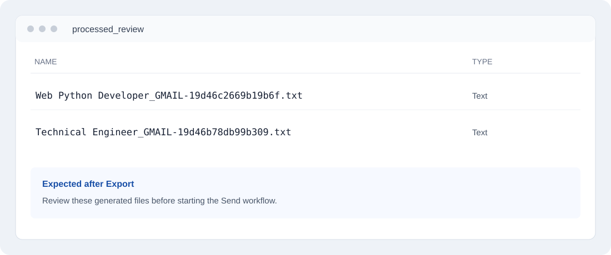
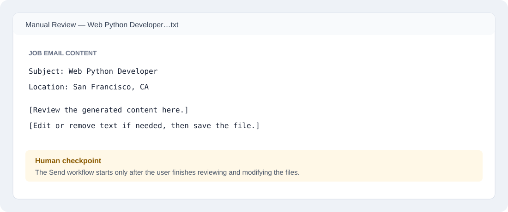
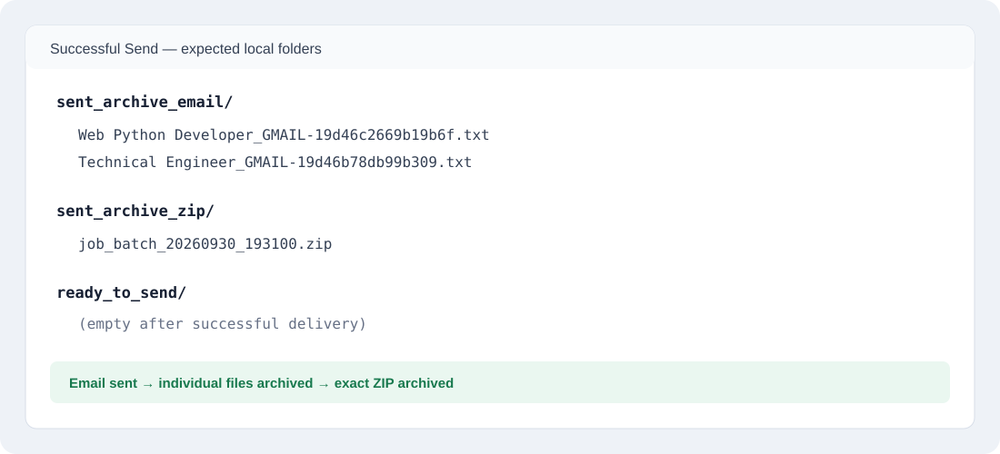
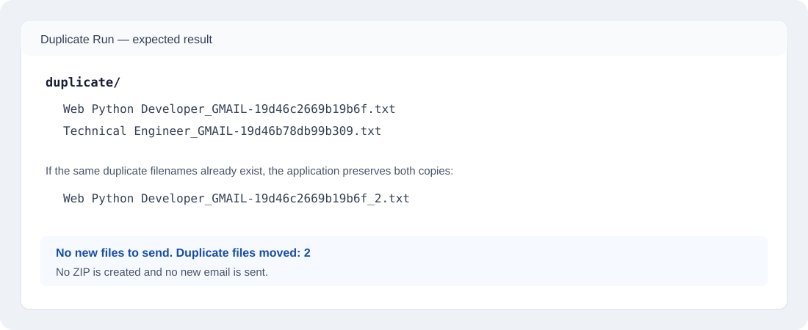

Two-part workflow with a manual review checkpoint
The application intentionally separates Export from Send. After files are generated, the user reviews and can modify them manually before continuing. This keeps a human approval step between automated extraction and outbound delivery.
Export emails to review files
TXT URL: http://localhost:8080/api/export?format=text
DOCX URL: http://localhost:8080/api/export?format=word
A REST export request authenticates with Gmail, retrieves messages from the configured source label, extracts and filters the content, and creates TXT or DOCX files in processed_review/. Each exported filename includes the Gmail message ID so the same source message can be recognized later.

processed_review/.User manually reviews and modifies the files
This happens between Step 1 and Step 2. Open the generated files, review the extracted job-email content, make any needed corrections or deletions, and save the files. The application does not automatically continue to Send.

Send the reviewed files
TXT URL: http://localhost:8080/api/send?format=text
DOCX URL: http://localhost:8080/api/send?format=word
After the manual review is complete, open the appropriate Send URL. The Send workflow first checks the reviewed files against sent_archive_email/ using the Gmail message ID. Already-sent messages are moved to duplicate/. New files are packaged into a ZIP in ready_to_send/ and sent through Gmail.

What happens to duplicates?
If a Gmail message ID already exists in sent_archive_email/, that file is not sent again. It is moved to duplicate/. If the same filename already exists there, the application preserves both files by adding _2, _3, and so on.

End-to-end sequence
PART 1 — EXPORT
Gmail source label
↓
Retrieve + extract + filter
↓
processed_review/
↓
STOP
USER MANUAL REVIEW
Open generated TXT/DOCX files
↓
Review and modify content
↓
Save reviewed files
↓
User starts Send
PART 2 — SEND
Check Gmail message IDs
↓
Already sent? ── Yes → duplicate/ → do not send
│
No
↓
Create ZIP → ready_to_send/
↓
Send through Gmail
↓ success
Individual files → sent_archive_email/
Exact ZIP → sent_archive_zip/
ready_to_send/ → emptyFailure safety
If Gmail delivery fails, the reviewed source files remain available and are not moved into the sent archive. The temporary ZIP is removed so the next attempt can create a fresh package. If Gmail succeeds but a later archive operation fails, the workflow report preserves that partial-success state instead of reporting a false full success.